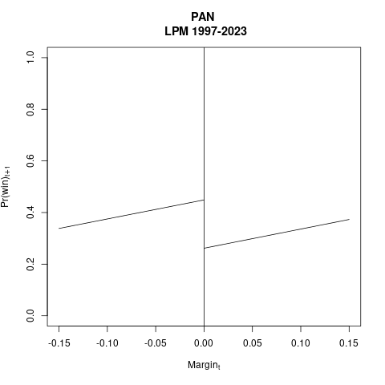

1. Réplica de Lucardi y Rosas
Intenté replicar aproximadamente tu paper con Adrián. No usé Calónico et al. para el RD — ya tendré que superar la pereza y entender sus minucias técnicas. Por ahora, estimé el switching regime model siguiente:
\(Pr(\text{win}_{t+1}=1) = \text{dneg}_t * (\alpha_0 + \alpha_2 \text{margin}_t) + (1 - \text{dneg}_t) * (\beta_0 + \beta_2 \text{margin}_t)\)
donde \(\text{dneg=1}\) indica márgenes negativos (esto es, que el partido analizado no ganó en \(t\)). Seleccioné municipios marginales donde el partido analizado ganó o fue runner-up en el año \(t\). Hice una estimación OLS con un modelo de probabilidad lineal y, para obtener errores de estimación, otra bayesiana.
Abajo aparecen las estimaciones del PAN (\(N \approx 4.7k\)). Muy parecidas entre sí y, aunque usan una serie de tiempo más larga que ustedes (1997-2023), también se parecen a sus resultados.
 |
 |